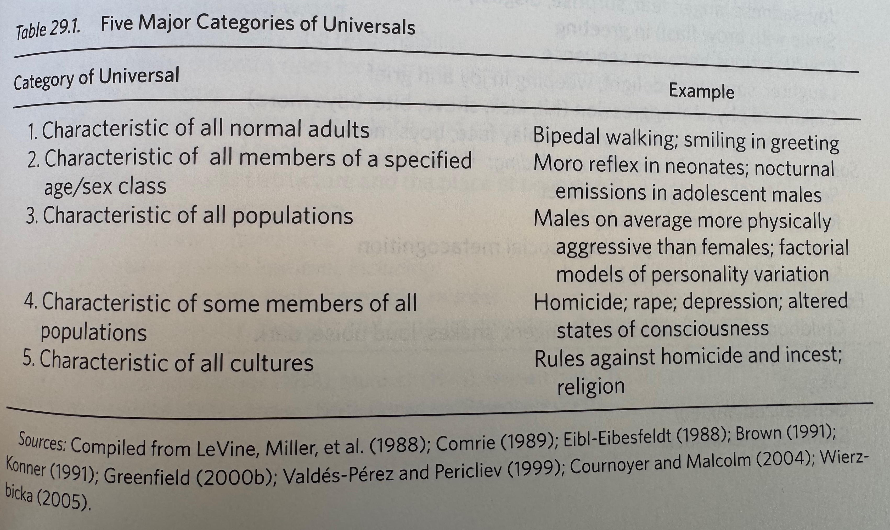

flowchart LR W(world) ---> C(child) C -->|assim/accom| C
Sociocultural Development
2025-11-07
Rick Gilmore
Department of Psychology
Prelude
– RHINO (2013)
Today’s topics
Sociocultural Development
Changing emphasis
- Individual child
- Piaget
- Circular reactions
flowchart LR W(world) ---> C(child) C -->|assim/accom| C C --> W
- Child in (social) context
- Lev Vygotsky
- Internalization of socially shared processes
flowchart LR P(people) <-->|intermental| C(child) W(artefacts) <---> C C -->|intramental| C
Vygotsky
- Internalization of socially shared processes
- Intermental (between social partners)
- Intramental (within a child)
- Zone of proximal development
- Importance of cultural tools

Vygotsky
- Jewish
- Child and adolescent during two Russian revolutions
- Home-schooled until age 11
- Died at 34
Vygotsky
Components of social environment
- People
- Characteristics
- Behaviors
- Settings
- Artefacts
– Frank (2014)
Another mathematics-related artefact
– The Maths Man (2024)
Tomasello (2016)
- Imitative
- Instructed
- Collaborative

Imitative learning
- Many animals
- Learn via imitation
- Many primates
- Learn “…because of or from” others (Tomasello, 2016, p. 643)
- Only humans
- “…learn things through another individual” (Tomasello, 2016, p. 644)
Imitative learning
- == observational learning?
- Perceptual & attentive requirements for?
- Mimicry
- Same means
- Emulation
- Same end, different means
Imitative learning
- Imitation
- Observed actions + apparent inference about intentions
- plus motivation to imitate?
- plus heightened focus on specifics of action, e.g., “overimitation”
- To signal group affiliation
Evolutionary perspectives


Premises
Natural selection works with the materials of ontogeny which translate genome into phenotype, acting at every point from conception to senescence.
Human ontogeny cannot be understood except in relation to ancestral ontogenies and those that competed with them for the limited chances afforded living forms.
– Konner (2011) pp. 14-16
More premises
Human behavior and its development, include all of mental life, are in their entirety biological manifestations.
As with ontogeny, and because of it, the brain has evolved by accretion.
[No]…human trait can be understood except in terms of brain function.
– Konner (2011) pp. 14-16
Still more premises
Despite limits to plasticity, cultural influence on human development is strong because its power is biolgically assured…To solve the apparent paradox of the powers of biology and culture is a central task of developmental research.
Socialization is not the same as enculturation.
– Konner (2011) pp. 14-16
Human childhood is special
- Unusually prolonged
- Paralleled by protracted period of brain plasticity
- Biologically selected for enculturation
- Konner (2011)
What is universal? What is particular?
Universals of behavior and culture

Some universals

Konner (2011) Table 29.2
More universals

Konner (2011) Table 29.2
From Language Acquisition Device (LAD)

To cultural acquisition device (CAD)

Konner (2011) Table 29.3
Stepping back
What is culture?
The social & physical environment
- Who are the people?
- What are their characteristics, roles, behaviors, beliefs & motivations?
- What are culturally important artefacts?
- How do these change across development?
Home environment
On social interaction networks
flowchart TD
A@{ shape: circle, label: "Mom" }
B@{ shape: circle, label: "Me" }
C@{ shape: circle, label: "Michelle" }
D@{ shape: circle, label: "Sonny" }
E@{ shape: circle, label: "Tom" }
F@{ shape: circle, label: "Ellie" }
G@{ shape: rounded, label: "BN" }
Z@{ shape: rounded, label: "Z" }
A ---|texts| B
A ---|phones| B
A ---|mails| B
A ---|talks with| B
E ---|texts| B
E ---|phones| B
C ===|lives with| B
C ---|texts| B
C ---|phones| B
C ---|talks with| B
B ---|talks with| D
B -->|instructs| D
B -->|cares for| D
B ---|plays with| D
D -->|imitates| B
D -->|imitates| C
D -->|imitates| F
C ---|talks with| D
C -->|instructs| D
C -->|cares for| D
F ===|lives with| D
C ---|plays with| D
F ===|talks with| D
F ==>|instructs| D
F ==>|cares for| D
F ===|plays with| D
G ===|plays with| D
G ===|talks with| D
Z ===|plays with| D
Z ===|talks with| D
B ---|talks with| F
C ---|talks with| F
B ---|texts| F
C ---|texts| F
L{Lola} --->|sniffs| D
D --->|avoids| L
The social human sciences
- Psychology
- Anthropology
- Sociology
- Political Science
- Economics
- Linguistics
Important
What can psychology learn from its sibling fields?
What can our sibling fields learn from psychology?
Blind men and an elephant

Wikipedia contributors (2025c)
Blind men and an elephant
Six blind elephants were discussing what men were like. After arguing they decided to find one and determine what it was like by direct experience. The first blind elephant felt the man and declared, ‘Men are flat.’ After the other blind elephants felt the man, they agreed.
– Wikipedia contributors (2025c)
Wrap-up
Next time…
Next time…
Resources
About
This talk was produced using Quarto, using the RStudio Integrated Development Environment (IDE), version 2025.5.1.513.
The source files are in R and R Markdown, then rendered to HTML using the revealJS framework. The HTML slides are hosted in a GitHub repo and served by GitHub pages: https://psu-psychology.github.io/psy-548-fall/
References
Chomsky, N. (1965). Aspects of the theory of syntax. Cambridge, MA: The MIT Press, Massachusetts Institute of Technology. Retrieved from https://mitpress.mit.edu/9780262030113/aspects-of-the-theory-of-syntax/
Darwin, C. (2012). The expression of the emotions in man and animals. CreateSpace Independent Publishing Platform. Retrieved from https://www.amazon.com/Expression-Emotions-Man-Animals/dp/1470188880
Frank, M. (2014). Representing exact number visually using mental abacus. Retrieved November 6, 2025, from https://databrary.org/volume/33
Herrmann, P. A., Legare, C. H., Harris, P. L., & Whitehouse, H. (2013). Stick to the script: The effect of witnessing multiple actors on children’s imitation. Cognition, 129, 536–543. https://doi.org/10.1016/j.cognition.2013.08.010
Konner, M. (2011). The evolution of childhood. Belknap Press of Harvard University Press. Retrieved from http://www.hup.harvard.edu/catalog.php?isbn=9780674062016
Legare, C. H., & Nielsen, M. (2015). Imitation and innovation: The dual engines of cultural learning. Trends in Cognitive Sciences, 19, 688–699. https://doi.org/10.1016/j.tics.2015.08.005
Lyons, D. E., Young, A. G., & Keil, F. C. (2007). The hidden structure of overimitation. Proceedings of the National Academy of Sciences of the United States of America, 104, 19751–19756. https://doi.org/10.1073/pnas.0704452104
Novack, M. A., Goldin-Meadow, S., & Woodward, A. L. (2015). Learning from gesture: How early does it happen? Cognition, 142, 138–147. https://doi.org/10.1016/j.cognition.2015.05.018
RHINO. (2013). Sister sledge - we are family (official music video). Youtube. Retrieved from https://www.youtube.com/watch?v=uyGY2NfYpeE&list=RDuyGY2NfYpeE&start_radio=1
Siegler, R., & Alibali, M. (2021). Children’s Thinking (5th ed.). Pearson.
The Maths Man. (2024). Japanese multiplication method | this is genius! Youtube. Retrieved from https://www.youtube.com/watch?v=g7PIURbaz3s
Tomasello, M. (2016). Cultural learning redux. Child Development, 87, 643–653. https://doi.org/10.1111/cdev.12499
Wakefield, E., Novack, M. A., Congdon, E. L., Franconeri, S., & Goldin-Meadow, S. (2018). Gesture helps learners learn, but not merely by guiding their visual attention. Developmental Science, 21, e12664. https://doi.org/10.1111/desc.12664
Wikipedia contributors. (2025a, May 25). Aspects of the theory of syntax. Retrieved from https://en.wikipedia.org/wiki/Aspects_of_the_Theory_of_Syntax
Wikipedia contributors. (2025b, October 23). Lev vygotsky. Retrieved from https://en.wikipedia.org/wiki/Lev_Vygotsky
Wikipedia contributors. (2025c, October 25). Blind men and an elephant. Retrieved from https://en.wikipedia.org/wiki/Blind_men_and_an_elephant